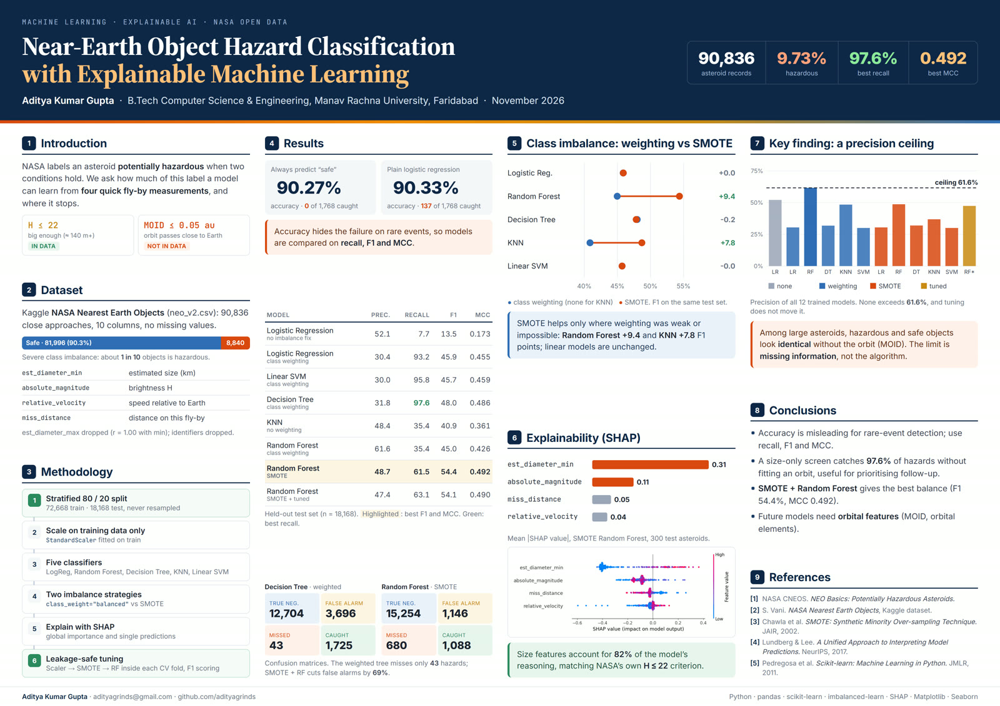

Near-EarthObject HazardClassification
with explainable machine learning
Classifying 90,836 NASA asteroid records as hazardous or safe, with imbalance handling, SHAP explanations, and an analysis of why accuracy alone fails.
The question
How much of NASA’s hazard label can machine learning recover?
NASA labels an asteroid potentially hazardous only when two conditions are true. We asked how much of that label a model can learn from four quick measurements, and where it stops.
Big enough
H ≤ 22
Absolute magnitude is brightness. Brighter means bigger, roughly 140 m or more across.
✓ In our dataClose enough
MOID ≤ 0.05 au
Minimum Orbit Intersection Distance: how close the asteroid’s orbit ever gets to Earth’s orbit.
✕ Not in our dataPotentially hazardous
hazardous = 1
Our target column. The model must guess it from size, speed and one fly-by distance.
Target to predictThe data
90,836 fly-bys, only 1 in 10 hazardous
NASA Nearest Earth Objects dataset from Kaggle (neo_v2.csv): 90,836 rows, 10 columns, zero missing values. Each row is one close approach of an asteroid to Earth.
| Column | Meaning | Used? |
|---|---|---|
| est_diameter_min | Estimated minimum size (km) | feature |
| est_diameter_max | Estimated maximum size (km). Correlation 1.00 with min, so it adds nothing | dropped |
| relative_velocity | Speed relative to Earth (km/h) | feature |
| miss_distance | How far it passed from Earth on this fly-by (km) | feature |
| absolute_magnitude | Brightness H, the “big enough” signal | feature |
| id, name | Identifiers only | dropped |
| orbiting_body, sentry_object | Context flags, no signal for this task | dropped |
| hazardous | True / False, converted to 1 / 0 | target |
The class imbalance
This is the core difficulty of the whole project.
Every dot is ~363 asteroids
The method
A pipeline built so the test set stays honest
Every step that learns from data (scaling, SMOTE) is fitted on training data only. The 18,168-record test set is never resampled and never seen during training.
Load & check
Downloaded with kagglehub, checked types, nulls and describe().
90,836 × 10Select features
4 inputs: diameter, velocity, miss distance, magnitude. Target True/False → 1/0.
90,836 × 4Stratified split
80 / 20 split that keeps 9.73% hazardous in both halves.
72,668 train · 18,168 testScale
StandardScaler fitted on train, then applied to test.
fit on train onlyTrain 5 models
Logistic Regression, Random Forest, Decision Tree, KNN, Linear SVM.
5 algorithmsFix imbalance
Class weighting vs SMOTE, both judged on the same untouched test set.
2 strategiesExplain with SHAP
Global importance plus a breakdown of one asteroid’s prediction.
300 explainedTune, leak-free
Scaler → SMOTE → RF inside every CV fold with RandomizedSearchCV.
scored on F1X_train, X_test, y_train, y_test = train_test_split( X, y, test_size=0.20, random_state=42, stratify=y # keep 9.73% hazardous in both )
scaler = StandardScaler() X_train_scaled = scaler.fit_transform(X_train) X_test_scaled = scaler.transform(X_test) # no fit! # SMOTE is applied to X_train_scaled only. # The test set always stays real data.
The accuracy trap
90% accurate, and almost useless
With only 9.73% hazardous, a model can look excellent by ignoring the rare class. That’s why we judged every model on recall, F1, MCC and balanced accuracy, not accuracy alone.
A “model” that always says safe
accuracy
Our first Logistic Regression
accuracy
Our trained model was only 0.06 points more accurate than doing nothing. It missed 1,631 hazardous asteroids. Accuracy hid the failure.
Interactive · confusion matrix explorer
Pick a model and see what it actually catches
Five algorithms
Same data, five very different trade-offs
We trained each with class weighting where the algorithm supports it. Switch the metric to see the trade-off: high recall comes with low precision, and high precision with low recall.
What the five models taught us
- Linear models + weighting (LR, SVM) and the weighted Decision Tree flag almost every hazard (93–98% recall) but 7 of 10 alarms are false.
- Random Forest is the opposite: the most precise (61.6%) but it misses 65% of hazards.
- KNN can’t use class weights at all, so the rare class gets outvoted by its neighbours.
- All F1 scores sit between 0.41 and 0.48. The next question: can a better imbalance fix move that?
Class weighting vs SMOTE
SMOTE helped only where weighting had failed
SMOTE (Synthetic Minority Over-sampling Technique) creates new hazardous examples by interpolating between real neighbours, on the training set only. Train went from 7,072 to 65,596 hazardous rows.
smote = SMOTE( sampling_strategy="auto", random_state=42 ) X_train_smote, y_train_smote = \ smote.fit_resample( X_train_scaled, y_train)
F1 score: class weighting → SMOTE
Same test set of 18,168 real records for both.
Random Forest and KNN jumped (+9.40 and +7.83 F1 points). The linear models barely moved, because class weighting had already rebalanced them. SMOTE pays off where weighting was weak or not possible.
Explainable AI · SHAP
Does the model think like NASA’s rule?
We explained the best model (SMOTE Random Forest) with SHAP, which splits each prediction into how much every feature pushed it towards “hazardous” or “safe”. 300 test asteroids explained against a 100-row background.
SHAP matched the physics
Mean |SHAP| per feature. Diameter + magnitude = 0.42 out of 0.51, so object size makes up 82% of the model’s reasoning. That mirrors NASA’s own H ≤ 22 condition.
One asteroid, explained
Why did the model call this one safe?
- The model starts from its average score: 0.517.
- Its small diameter pulls the score down by −0.41. That alone decides it.
- Magnitude (−0.07), miss distance (−0.03) and velocity (−0.01) only nudge it.
- Final score 0 → predicted safe. Actual class: safe. ✓
Hyperparameter tuning
Tuning without data leakage
If you apply SMOTE before cross-validation, synthetic copies of validation rows leak into training and the score looks better than it is. So scaling and SMOTE run inside each fold through an imbalanced-learn Pipeline.
rf_pipeline = Pipeline([ ("scaler", StandardScaler()), ("smote", SMOTE(random_state=42)), ("rf", RandomForestClassifier(random_state=42)) ]) param_grid = { "rf__n_estimators": [100, 150, 200], "rf__max_depth": [10, 15, 20, None], "rf__min_samples_split": [2, 5, 10], "rf__min_samples_leaf": [1, 2, 4], "rf__max_features": ["sqrt", "log2"] } random_search = RandomizedSearchCV( rf_pipeline, param_grid, scoring="f1", cv=StratifiedKFold(n_splits=2, shuffle=True))
| Metric | SMOTE RF | Tuned SMOTE RF |
|---|---|---|
| Accuracy | 89.95% | 89.59% |
| Precision | 48.70% | 47.39% |
| Recall | 61.54% | 63.12% ↑ |
| F1 score | 54.37% | 54.14% |
Tuning moved recall up a little and F1 stayed flat. When tuning can’t move the score, the limit probably isn’t the model. That led to the key finding.
Key insight
A 62% precision ceiling that no model could break
Across every model, weighting, SMOTE and tuning, precision never passed 61.6%. The cause is the data, not the algorithms.
Precision of every model we trained
Of the asteroids each model flagged as hazardous, how many really were.
Why: the model can see size, but not the orbit
✓ visible in data
Is it big? (H ≤ 22)
Diameter and magnitude tell the model this clearly. That’s why recall can reach 97%.
✕ invisible: MOID missing
Big + orbit comes close → hazardous
Big + orbit stays far → not hazardous
Among large asteroids, these two groups look identical to the model. It has to guess, so false alarms are unavoidable.
The limit comes from missing information, not from the algorithms. Future hazard models need orbital features such as MOID.
Final results
Every model, every metric
All numbers on the same 18,168-record test set. MCC and balanced accuracy are computed from each confusion matrix. Sorted by F1.
| Model | Accuracy | Precision | Recall | F1 | MCC | Bal. acc. |
|---|
Impact
What this is useful for
A fast first screen
A size-only screen catches nearly all hazardous objects without fitting an orbit. That can help decide which new objects to follow up first.
Which data matters
The project shows exactly which data a hazard model needs, and why: without orbital features, precision hits a ceiling.
A reusable pipeline
The leakage-safe Scaler → SMOTE → model pipeline works for other rare-event problems: fraud, disease or defect detection.
Tech stack
Research poster
The whole study on one page
A one-page, conference-style poster of the study (landscape, A-series ratio). Every chart is drawn from the notebook’s real numbers.
Inside the poster
- Introduction · NASA’s hazard rule
- Dataset · 1 in 10 hazardous
- Methodology · 6-step pipeline
- Results · table + matrices
- Weighting vs SMOTE
- Explainability · SHAP
- Key finding · 62% ceiling
- Conclusions & references

Vector PDF · prints sharp at any size

Open full size ↗P/04 · NEO hazard classification